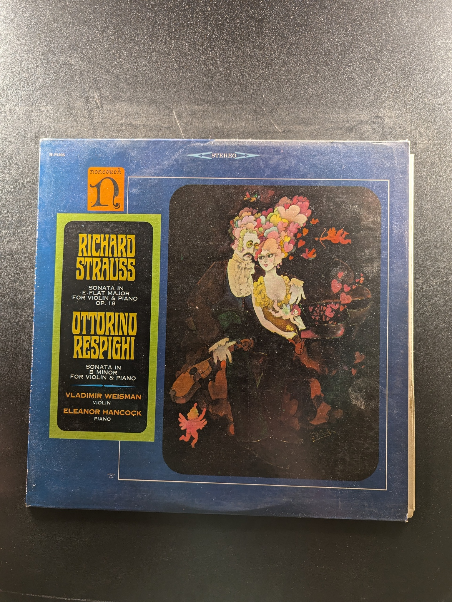
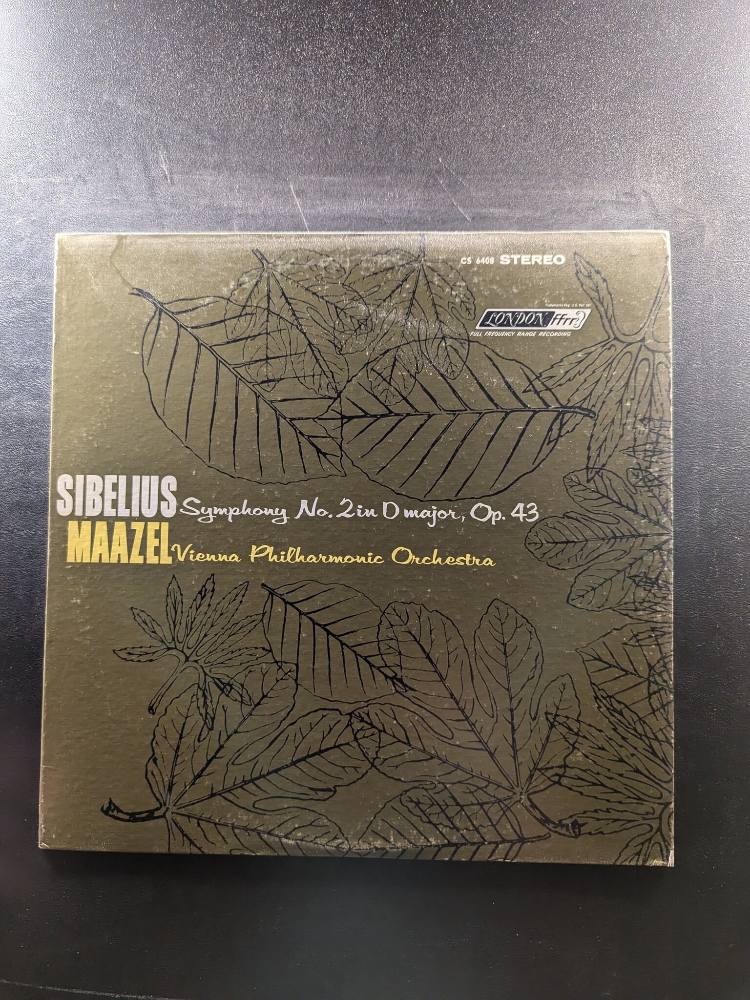

Symphonie Fantastique Op. 14
Berlioz
London Stereo Treasury Series STS 15006
L'Histoire du Soldat / Sonata (1924) / Three Pieces for String Quartet / Three Pieces for Clarinet
Igor Stravinsky
Musical Heritage Society Inc. MHS 1365
Choral Symphony
Holst
Angel S-37036
Music at the Court of Leopold I (1640-1705)
The Concentus Musicus
The Bach Guild BG-690
A Midsummer Night's Dream
Otto Klemperer
Angel 35881
Sonata in E-flat Major for Violin & Piano / Sonata in B Minor for Violin & Piano
Richard Strauss / Ottorino Respighi
Nonesuch H-71283
La Création du Monde / Suite Provençale
Charles Munch / Boston Symphony
RCA Gold Seal AGL1-3943
Symphony No. 5 in E Flat / En Saga
Sibelius
Angel S-37046
Concertos for Diverse Instruments
Vivaldi
The Bach Guild HM 16 SD
Don Quixote
George Szell, Richard Strauss, Pierre Fournier, The Cleveland Orchestra
Columbia Odyssey Y 34134
Symphony No. 9 in E Minor 'From the New World', Op. 95
Antonín Dvořák
Supraphon MHS STEREO 4064
Concertino for Piano & Chamber Orchestra / Concertino for Piano & Orchestra / Capriccio for Piano & Orchestra / Rhapsody for Piano & Orchestra, Op. 1
Walter Klien, György Sándor, Charlotte Zelka
Turnabout TV 34105S
A Hero's Life
Richard Strauss
Pickwick SPC-3041
Szell Conducts Two Musical Fables
The Cleveland Orchestra
Columbia
Symphony No. 2 in D major, Op. 43
Sibelius, Maazel, Vienna Philharmonic Orchestra
London ffrr CS 6468
Walton Symphony No. 1
André Previn, London Symphony Orchestra
RCA Victor Red Seal LSC-2927
Mendelssohn Symphony No. 5 'Reformation' / Schubert Symphony No. 5
Leonard Bernstein, The New York Philharmonic
Columbia Masterworks
Landowska plays Bach
Landowska
RCA Victrola VIC-1594
Master Works for Organ Volume 5
Jørgen Ernst Hansen
Nonesuch H-71179
Chopin Sonatas
Abbey Simon
Turnabout TV 34272
A Chopin Recital
Guiomar Novaes
Vox STPL 57810
Piano Rags by Scott Joplin, Volume II
Joshua Rifkin
Nonesuch H-71248
{kind=link}
{kind=link}
{kind=link}
{kind=link}
{kind=link}
{kind=link}
{kind=link}
{kind=link}
{kind=link}
{kind=link}
{kind=link}
{kind=link}
{kind=link}
{kind=link}
{kind=link}
{kind=link}
{kind=link}
{kind=link}
{kind=link}
{kind=link}
{kind=link}
{kind=link}